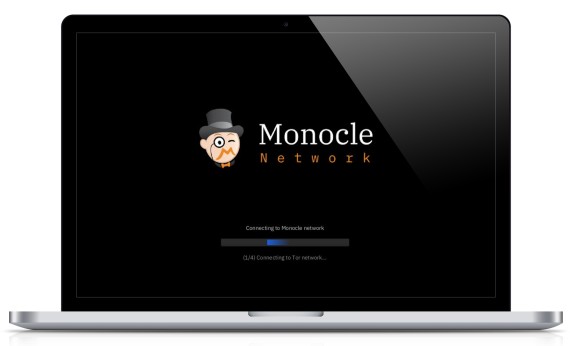

Privacy by design
You control your own information
Monero is at the core of Monocle, so transaction privacy is a native feature. Peers trade directly with one another while maintaining custody of their funds.
Buy and sell Monero for fiat, Bitcoin, and other cryptocurrencies.
Peers trade privately, while Monocle operates transparently. Your data stays on your device, and Monocle publishes view keys for its own network addresses.
Privacy by design
Monero is at the core of Monocle, so transaction privacy is a native feature. Peers trade directly with one another while maintaining custody of their funds.
Transparency
Monocle publishes view keys for network fee and reserve wallets and discloses how network fees are distributed across development, operations, and reserves.
Community
Monocle listens to peers through bounties, feature requests, and transparent decision-making. New community members and contributors are welcome.
Security
Alongside the Haveno base layer, Monocle provides a publicly auditable Peer Security Reserve, a vulnerability bounty program, and rapid-response procedures.
Censorship resistance
Independent networks serving the same protocol give peers alternatives. Monocle will seek to decentralize the Haveno ecosystem wherever technically feasible.
Network fees and reserves are made transparent through published view keys. Monocle wants peers to verify, not simply trust.
Fees total 0.3% for the first year, with a future cap of 1%.
33% of network fees go to community reserves that may reimburse affected peers after qualifying exploits.
Suggest changes, build support, and turn popular ideas into bounties that improve the wider Haveno ecosystem.
Find support through SimpleX, Matrix, Telegram, and GitHub, with common guides and troubleshooting in the Wiki.
33% of network fees go to community reserves.
Helps reimburse affected peers after qualifying software or protocol vulnerabilities.
Read moreSupports continued Haveno development through bounties and audits.
Read moreAdvances open-source projects that benefit Monocle and the Monero community.
Read more
Start trading Monero privately, peer-to-peer, with no KYC and no account required.
Read and DownloadGet involved!
Monocle welcomes community members and contributors interested in building a sustainable Haveno ecosystem.
Get Involved